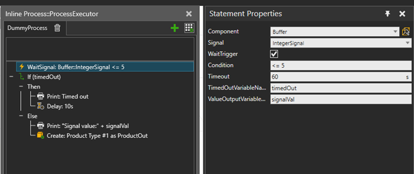

A Wait Signal statement allows you to pause process execution until a signal is received. You can use it also to assign a signal value to a Process variable for later use of other statements. You can select a Boolean, Integer, Real or String signal of any static component in the current layout. To wait for a specific signal value or value range, define an expression for the Condition field. Use Timeout property to limit the maximum waiting time.
Note: If timeout is reached, the current value of the signal at that time is not evaluated or written to the value output variable. If you want to get the current value of a signal, you need to set WaitTrigger to False, leave Condition empty, and specify ValueOutputVariableName.
Note: Unlike the general Process variable handling, the Output variable is always a single value, and the value is never converted to a list.

| Name | Description |
| Component | Component that owns the signal. Null means this component. |
| Signal | Signal to wait for. |
| WaitTrigger | Whether to always wait for a new signal value. When False, also considers the current value of the signal when this statement's execution starts. |
| Condition | Condition expression that the signal's value has to pass. Leave empty to accept any value. See also Process Statement Expressions. |
Timeout |
Maximum amount of simulation time to wait for a value that matches the condition. 0 means no time limit. |
| TimedOutVariableName | Name of a process variable where to store a Boolean value whether the timeout was reached or not. Can be left empty. See also Using Process Variables. |
| ValueOutputVariableName | Name of a process variable where to store the signal value that passed the condition. Can be left empty. See also Using Process Variables. |